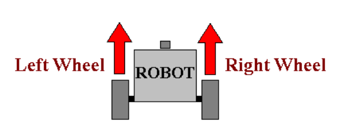
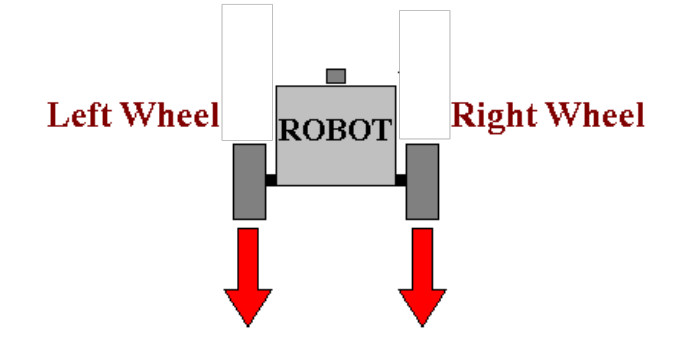
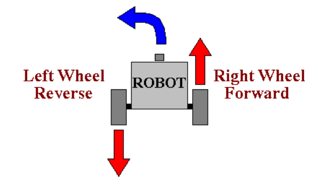
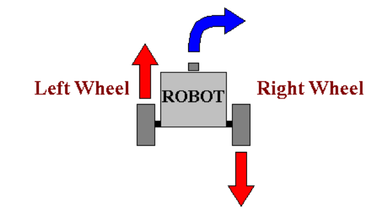
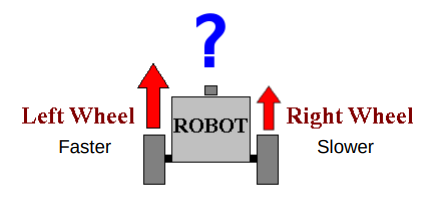
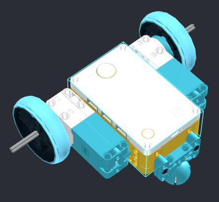
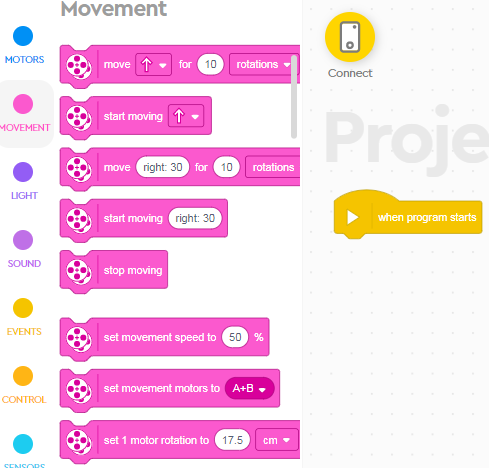

Two Wheel Robots
Now that we understand some basic Motor Control, let's look at how Two-Wheel Robots behave.
This is how classic car steering works.
One motor is driving the back axle, and the passive front wheels are used for steering:

Robots don't need a steering wheel.
And it's much easier to maneuver if you have two independent motors, like a tank.
Here's an example of modern mobile robots:
Simple Movements
So, how do we control simple, two-wheel robots?
Need to drive both motors at the same speed to go forward:

Also, need to use the same speed on both motors to go back:

What about turning?
Lot's of ways to turn, but themost efficient approach is:

What about when we want to turn the other way?

How about this?

What are some other possibilities we have not discussed? Let's test some movement on our LEGO robots.
Basic Build
First we need to build a robot with two motors driving a wheel on each side, and balanced, usually over a ball bearing.
Here is the basic idea, but please feel free to build a more interesting design:

Once built let's test some Movement Blocks:

Move For vs. Start Moving
The Move For tell the robot to use the 2 motors in a particular direction for a certain distance or for a certain duration.
These are great for robots with planned paths.
However, most modern mobile robots are designed to work in dynamic environments - where things might move into their paths and they can't just drive over them!
For more interesting algorithms, we will be useing the Start Moving blocks, but for now, let's concentrate on sequential programming.
Challenges
Drive Straight
Get your robot to drive forward for 1 meter, 1 tile, the length of the class, etc.
You can use either of the Move For blocks.
- By the way, what is the difference? (one can turn, the other only for fwd/back)
Turning
The Second Move For Block allows for turning:
Directions:
- 0 - Straight
- 100 - Sharpest Right turn possible (in place)
- ~50 - Wider turn radius
- ~5 - Very wide turn radius, this will trace a large circle on the floor
Negative numbers will behave the same, but towards the left.
Test out turning.
Turning Challenges
- Trace a 30cm-radius circle
- Turn 90 degrees to the left
- Trace a square pattern
- Trace any other polygon